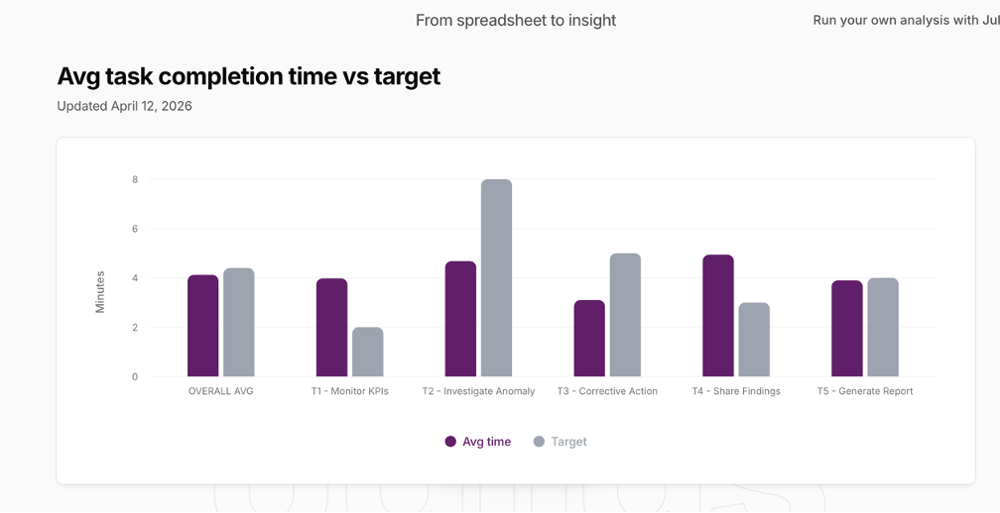
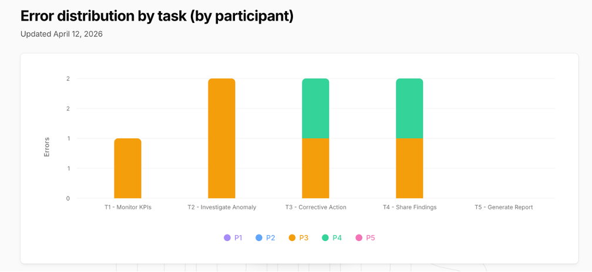
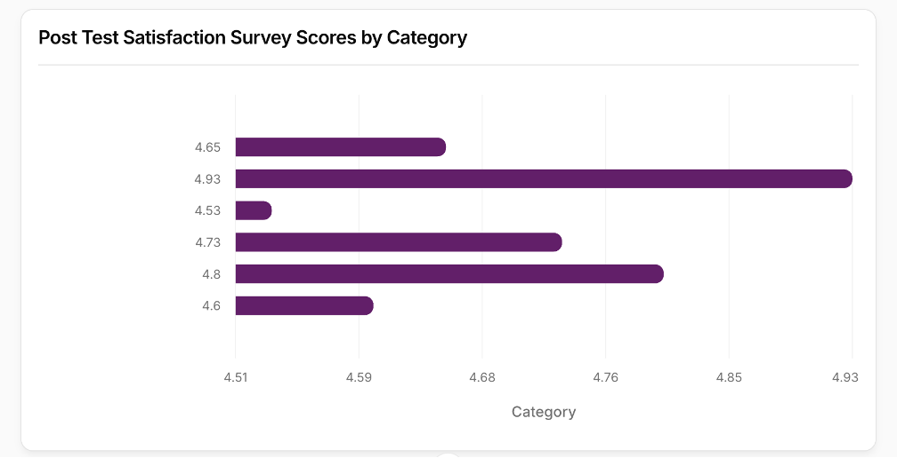
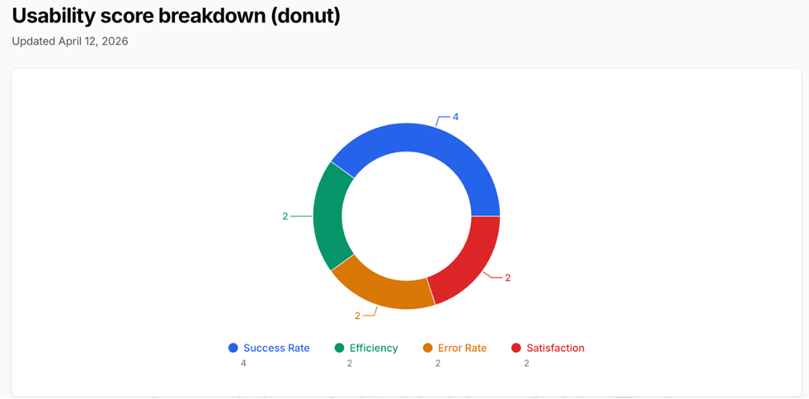

Each became a Stitch AI redesign prompt. Below: all 13 redesigns with visual evidence.
Remote moderated sessions with representative users from operations, finance, and engineering. Zoom recordings, Otter.ai transcripts, and post-session surveys.
Feedback snippets below directly drove redesign decisions.
All 10 quotes below are verbatim extracts from Otter.ai auto-transcriptions of the 5 usability sessions. Each quote was mapped to a specific design issue or validation point. Quotes are listed in order of impact severity (critical issues first, then validations).
| T1 · Monitor KPIs | 2 min | 3.98 min | 1 | 100% | 5.0 / 5 | Over target |
| T2 · Investigate Anomaly | 8 min | 4.68 min | 2 | 100% | 4.6 / 5 | Within target |
| T3 · Corrective Action | 5 min | 2.70 min | 2 | 100% | 4.8 / 5 | Within target |
| T4 · Share Findings | 3 min | 4.94 min | 2 | 100% | 4.4 / 5 | P4 outlier: 13.5 min |
| T5 · Generate Report | 4 min | 3.90 min | 0 | 100% | 5.0 / 5 | Within target |
| T4 · Share Findings | 3 min | 4.94 min | 2 | 100% | 4.4 / 5 | P4 outlier |
| T5 · Generate Report | 4 min | 3.90 min | 0 | 100% | 5.0 / 5 | Within target |
Verbatim Feedback — Direct from Transcripts
Each quote directly triggered a redesign decision. Extracted from Otter.ai session transcripts.
“I'm not sure what's going on here, because we somehow jumped from step two to step five.”
→ Redesign U-04: Step counter fixed to 5 consistent steps
“Even though satisfaction was labeled in red, it still had a tick mark — I didn't know if I needed to give it attention.”
→ Redesign U-01: Tick replaced with warning icon on alert KPIs
“There's no feedback loop — I can't confirm sharing even finished. I have to give that a one, unfortunately.”
→ Redesign U-07: Post-sharing confirmation screen added
“I didn't have to go to five different data points — that first click showed me exactly what led to the anomaly.”
✓ Validates core alerting mechanism design
“Information is enough and not cluttered — that was the best part of this whole UX experience.”
✓ Validates information architecture throughout
“It gave me a preview of what would be sent — I had confidence the right content was going to my team.”
Report preview step rated 5/5 by all 5 participants
“First click already showed what caused the anomaly.”
Impact: validated information architecture for anomaly triage.
“The interface felt clear and not cluttered.”
Impact: supports continuation of simplified, progressive disclosure pattern.
Cross-Participant Themes
Root Cause Visibility (3/5 participants) — Manny, P3, and P4 all mentioned that root cause explanation was buried or missing. This single theme drove the highest-impact redesign: U-03 promoted root cause to mandatory Step 3 in the investigation flow.
AI Confidence Transparency (3/5 participants) — P1, P3, and P4 all wanted to see how the AI arrived at the confidence score. Redesign U-05 adds expandable confidence breakdown.
Sharing Confirmation Gap (2/5 participants) — P3 and P4 both noted the absence of post-sharing feedback. This became critical redesign U-07 (post-sharing confirmation screen).
07 — Outcome & Impact
8.89/10 · 100% task success · all 5 would use this in real work
Exceeds the 7.0/10 target. Zero failures across 25 tasks and 5 participants. The core product goal — from alert to action without leaving the app — was validated.
Quantitative Findings Summary
Summative usability testing with 5 moderated remote sessions (April 3–4, 2026) across 25 tasks (5 tasks × 5 participants) yielded the following metrics:
06 — Outcome and Impact
8.89
Usability Score /10
Target was 7.0 / 10
100%
Task success rate
25/25 tasks completed across all participants
4.72
Avg satisfaction /5
Across 22 Likert items and 7 survey categories
3.80
Lowest: AI trust /5
3/5 participants wanted formula breakdown for confidence score
0.28
Avg errors / task
Well below 1.0 threshold · T5 Report had zero errors
13.5
P4 Task 4 outlier (min)
4.5× over 3-min target · Missing post-share confirmation → critical redesign
5/5
Would use in real work
All participants confirmed intent to adopt in their professional workflow
3.80
Lowest score: AI trust
Need better formula transparency
0.28
Avg errors / task
Below 1.0 threshold
Met (12)
KPI status visible within 3 seconds
One-tap Jira / Slack / Teams sharing
AI confidence score displayed
Auto-populated ticket from investigation
Report preview before send enforced
5-step guided investigation flow
Partially Met (6)
Mode discoverability (Basic/Advanced)
AI confidence formula breakdown
Assignee rationale in ticket
Post-alert navigation clarity
Metric glossary reachability
Filter label legibility
Not Met (2)
Root cause surfaced before interventions
Post-sharing confirmation feedback
Both have redesign fixes + Stitch AI prompts written for next iteration
Partially Met
AI confidence formula visibility
Post-alert navigation clarity
Metric glossary access
Not Met
Root cause before interventions (prior version)
Post-sharing feedback state (prior version)
Both addressed in redesign backlog
Statistical Analysis & Outlier Impact
Overall Performance: Task success rate 25/25 = 100%; usability score 8.89/10 (exceeds 7.0 target by +27%); avg satisfaction 4.72/5; avg errors 0.28/task; adoption intent 5/5 participants said they would use this in real work.
Outlier Analysis — P4 Task 4 (Share Findings): P4 spent 13.5 minutes on Task 4 vs. 3-minute target (4.5× over target). Transcript analysis revealed external cause + design gap (missing post-sharing confirmation feedback). This outlier drove critical redesign U-07.
AI Trust Score: Avg 3.80/5; 3/5 participants rated 3/5 or below. Redesign U-05 adds confidence factor breakdown.
08 — AI Tools Throughout
6 AI tools · every phase · ~20 hours of workflow accelerated
End-to-end experiment in AI-assisted UX. Each tool served a specific, deliberate role — AI accelerated without replacing critical design judgment.
AI-Assisted Workflow Impact
Six AI tools were integrated across the full design lifecycle (research → prototyping → evaluation → testing → analysis → visualization). Total AI acceleration: ~20 hours of manual labor reduced to ~4 hours of AI-guided work.
Research: Looppanel auto-coded 5 interviews → 51 user needs in 45 min. Prototyping: Stitch AI generated 23 hi-fi screens from structured prompts. Evaluation: Claude + Figma MCP reviewed 23 screens for cross-screen consistency. Testing: Otter.ai transcribed 5 sessions instantly. Analysis: Claude calculated usability score and outliers. Visualization: Julius AI created 4 publication-quality charts in 15 min.
What AI Missed — and Why It Matters — H-04 (Dismiss without Undo), H-09 (Rubber-Stamp Risk), and H-10 (Missing Deep-Link) were interaction issues that only surfaced when simulating actual use under task pressure.
Conclusion: AI is an accelerant, not a replacement. It improved speed, breadth, and consistency, but the final product decisions still required human design judgment and ethical review.
07 — AI Tools Throughout the Project
Research Phase
Looppanel
Auto-coded 5 interview transcripts into themes, pain points, and user needs. Generated persona inputs and affinity cluster summaries from observational research.
Cut 8+ hrs of qualitative coding to ~45 min. Surfaced "context-switching" as the #1 dominant theme across all 5 users.
Lo-Fi Prototype (Phase 2)
Stitch AI
5-screen wireframe flow generated from Master Prompt design system. Used for 2 cognitive walkthrough sessions to validate information architecture. Informed 5 iteration cycles before hi-fi investment.
Low-fi validation reduced rework risk before high-fidelity production.
Hi-Fi Prototype (Phase 3)
Stitch AI
Screen-by-screen generation for all 23 hi-fi screens using Master Prompt design system + per-screen detail prompts. 8 redesign iteration cycles after heuristic evaluation feedback.
Prompt precision + structured iteration improved consistency across the full flow.
Google Stitch Section
Google Stitch — Interactive Prototype
Google Stitch was used to rapidly generate and iterate interaction flows before final Figma refinement. It helped validate sequence, state transitions, and prompt-driven UI variants early in the design cycle.
Heuristic Evaluation — Phase 3 (5 Evaluation Sessions)
Claude + Figma MCP + Self-Assessment
Dual-method evaluation across 5 expert walkthrough sessions. (1) AI-assisted: Claude + Figma MCP reviewed all 23 screens via get_screenshot + get_design_context. Found cross-screen inconsistencies (H-14 'oira' label bug, H-12 contradictory report flows) in minutes. (2) Self-assessment: 5 expert walkthrough sessions simulating end-to-end user flows. Caught interaction-level issues (H-04 dismiss without undo, H-09 rubber-stamp risk, H-10 missing deep-link). Result: 14 issues total (9 from AI, 5 from self-assessment). Neither alone was sufficient—together produced complete picture.
AI found visual/system inconsistencies fast; self-assessment surfaced behavioral and consequence-level risks.
Usability Testing — Phase 4 (5 Moderated Remote Sessions)
Otter.ai + ChatGPT
Auto-transcription of 5 Zoom sessions (April 3–4, 2026 | 40–65 min each). Otter.ai AI Chat extracted confusion moments, success quotes, and issues by task number. ChatGPT structured real-time metric entry, usability score calculation, gap analysis vs PRD.
Results: 100% task success (25/25 tasks), 8.89/10 usability score, 4.72/5 satisfaction, 0.28 avg errors/task. Verbatim feedback surfaced: Manny's root cause complaint, Abhishek's tick mark ambiguity, P4's sharing confirmation gap—all became high-severity redesigns (U-01, U-03, U-07).
Analysis + Data
ChatGPT
Structured real-time metric entry during sessions. Usability score calculation. Gap analysis comparing test results against PRD UX requirements.
Flagged P4 Task 4 as 4.5× statistical outlier (13.5 min vs 3-min target) during analysis — immediately directing focus to the sharing confirmation gap.
Data Visualization
Julius AI
4 publication-quality charts from usability data: task time comparison, satisfaction by category, error distribution, usability score breakdown donut.
Generated charts matching exact brand colors and report formatting. Reduced chart production from ~2 hrs to 15 min per chart set.
Generated Charts — Julius AI




Analysis
ChatGPT
Assisted scoring framework, outlier spotting, and requirement gap checks.
Reflection: useful for structure; final interpretation stayed human-led.
AI Excelled At
Cross-screen consistency · Text truncation bugs · PRD-to-prototype gap analysis · Quantitative metric calculation · Qualitative research synthesis · Rapid screen generation from precise prompts
Required Human Judgment
Interaction consequences after tap · Accidental action risk · Missing feedback states · Emotional resonance of design choices · Knowing when a "fix" changes intent · Participant rapport during sessions
AI excelled at
Cross-screen consistency checks, transcription summarization, metric calculations, and fast visual generation from structured datasets.
Human judgment remained essential
Interaction risk assessment, missing feedback-state identification, ethical interpretation of AI recommendations, and prioritization trade-offs.
08 — Skills Demonstrated
End-to-end UX practice across research, design & validation
🔍
User Research
Moderated interviews, observational sessions, Looppanel AI synthesis, persona development, journey mapping
📋
Requirements Definition
55 functional + 42 UI requirements, full traceability from user need → PRD → prototype screen
✏️
Wireframing & Prototyping
Lo-fi in Stitch AI, hi-fi in Figma, mobile-first design, 23 screens across 5 tasks
🎨
Visual & Interaction Design
Design system with color tokens, Slack-inspired palette, consistent component library
🔬
Heuristic Evaluation
Nielsen's 10 heuristics, 14 issues (P0–P3), AI-assisted full-prototype eval via Figma MCP
🧪
Summative Usability Testing
5 moderated remote sessions, think-aloud protocol, quantitative scoring, outlier analysis
📊
Quantitative UX Analysis
Weighted usability scoring, task metrics, Likert scales, UX requirements compliance tracking
🤖
AI-Augmented Design
6 AI tools across full lifecycle — research, prototyping, evaluation, testing, visualization
📊
Quantitative Analysis
Scoring frameworks, outlier detection, and impact reporting.
🤖
AI-Augmented Design
Deliberate use of AI tools across every phase.
09 — Key Takeaways & Next Improvements
What designing an AI product with AI tools taught me
AI evaluation + self-assessment are complementary
AI caught cross-screen consistency bugs (H-14 'oira' label, H-12 contradictory report flows) in minutes—work that would take hours manually. Self-assessment caught interaction consequences AI cannot predict (H-04 dismiss without undo, H-09 rubber-stamp forms). Alone, neither method found the complete 14-issue picture. Recommendation: run AI evaluation first to establish baseline, then self-assessment to catch interaction gaps.
Transparency is the prerequisite for AI trust
AI trust satisfaction was the lowest score (3.80/5 vs 4.72/5 overall). Users weren't distrusting AI — they wanted to understand it. Three of five participants requested confidence formula breakdown and data-source visibility. Redesign U-05 adds an expandable confidence panel.
One outlier tells the most important story
P4's Task 4 time of 13.5 minutes looked like statistical noise (4.5× over target). Otter.ai transcript analysis revealed it was actually two stories: external interruption plus a design gap (missing post-sharing confirmation). Qual + quant together prevented misinterpretation and protected the right redesign decision.
The PRD is your north star — keep returning
Both "Not Met" requirements were in the PRD from day one. They only surfaced under real usability test conditions — not expert heuristic evaluation. Real users navigating under task pressure exposed what expert review missed.
Precise prompts produce precise outputs
Vague Stitch AI prompts produced generic screens. Prompts that named specific Figma screen IDs, listed exact component states, and referenced PRD requirements produced production-quality UI. Prompting is a design discipline.
Every research hour compounds forward
The 51 user needs from research shaped 55 PRD requirements, which shaped 23 screens, which were tested and validated. The quality of the final product was determined in the first two weeks of user research.
Quant + qual together prevents blind spots
Outlier metrics alone were insufficient until supported by transcript evidence.
AI is strongest in acceleration, not accountability
AI improved speed and breadth; final product decisions required design judgment and ethical review.